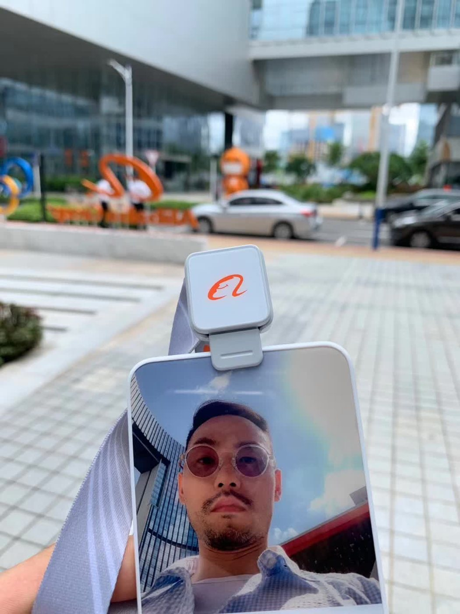
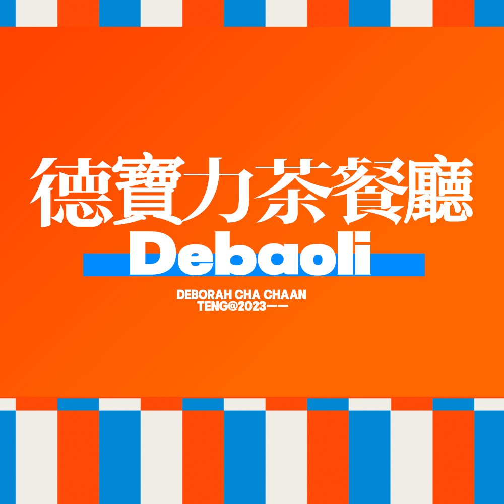
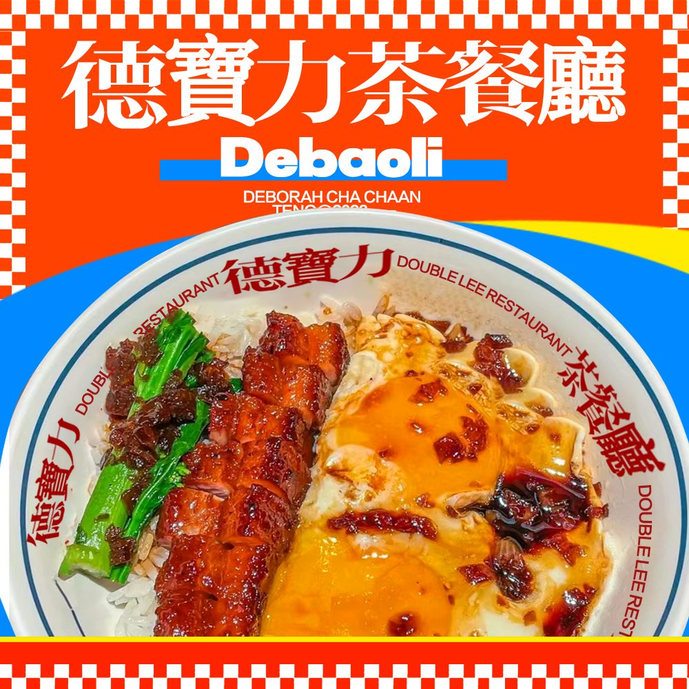
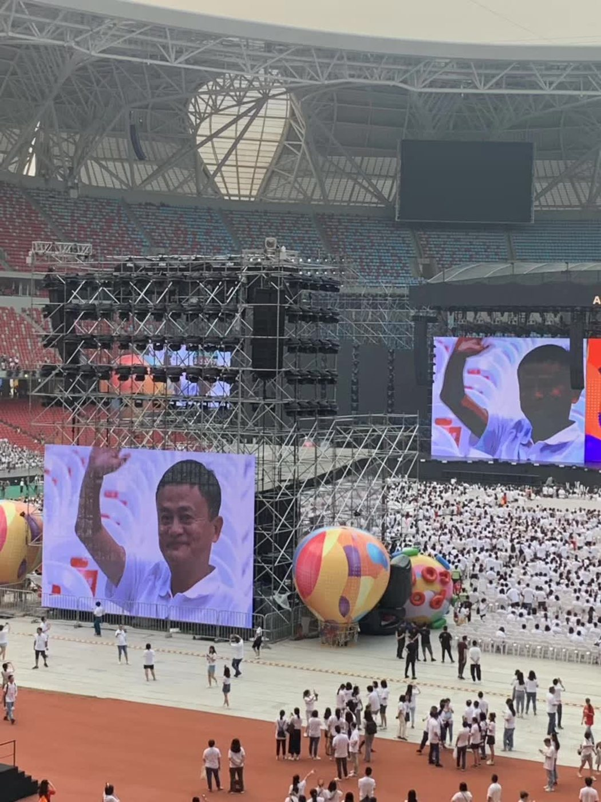
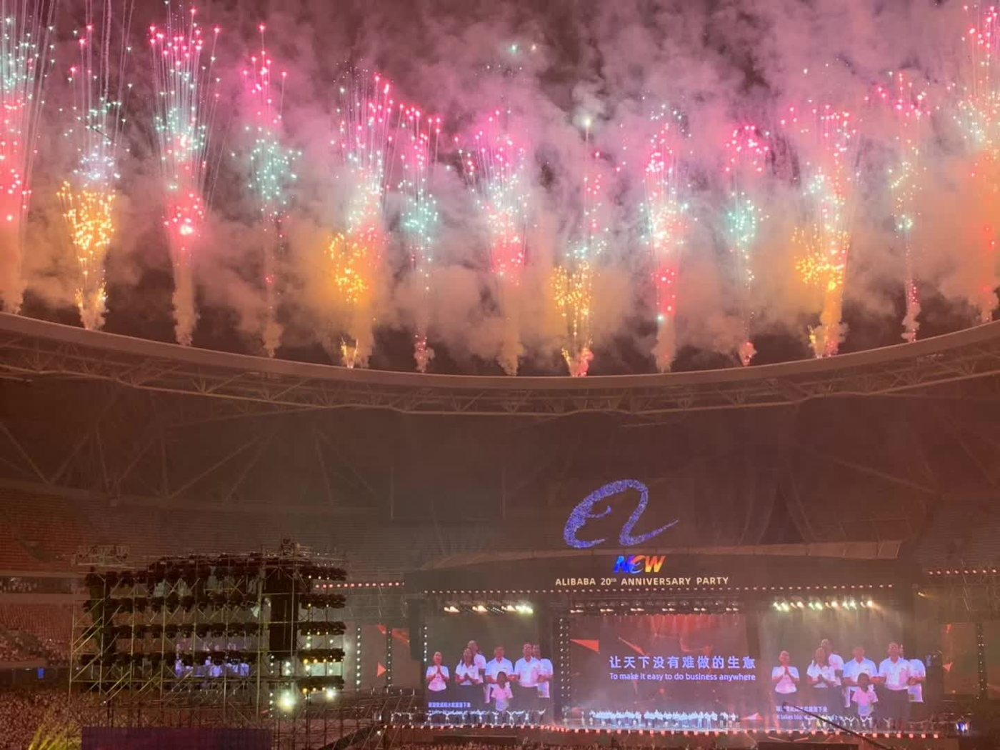
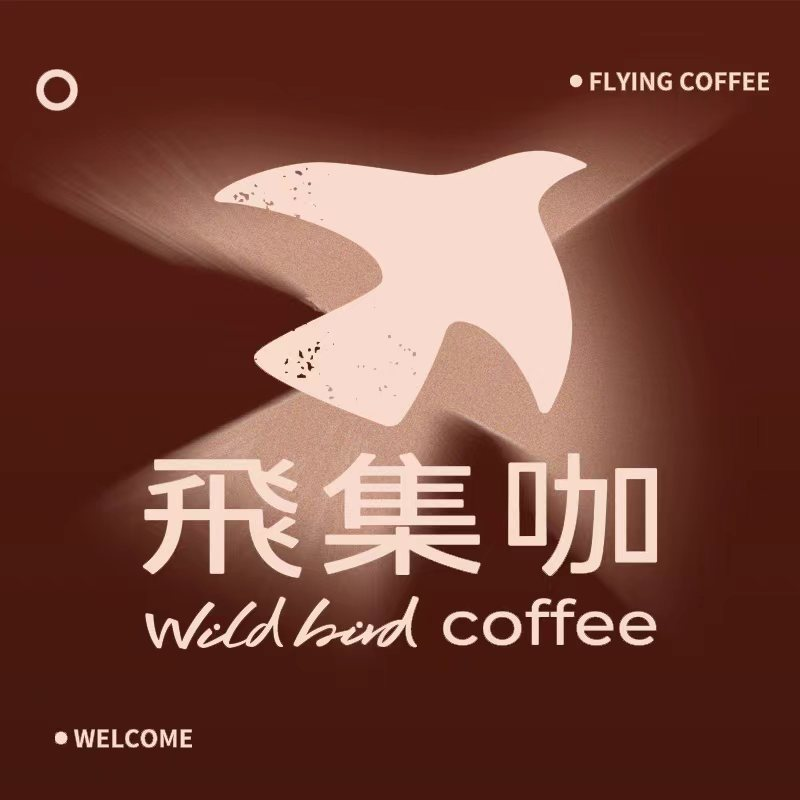
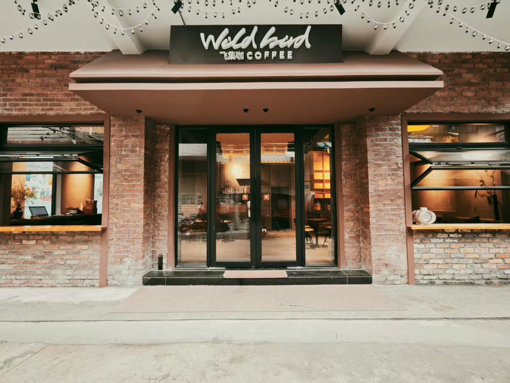
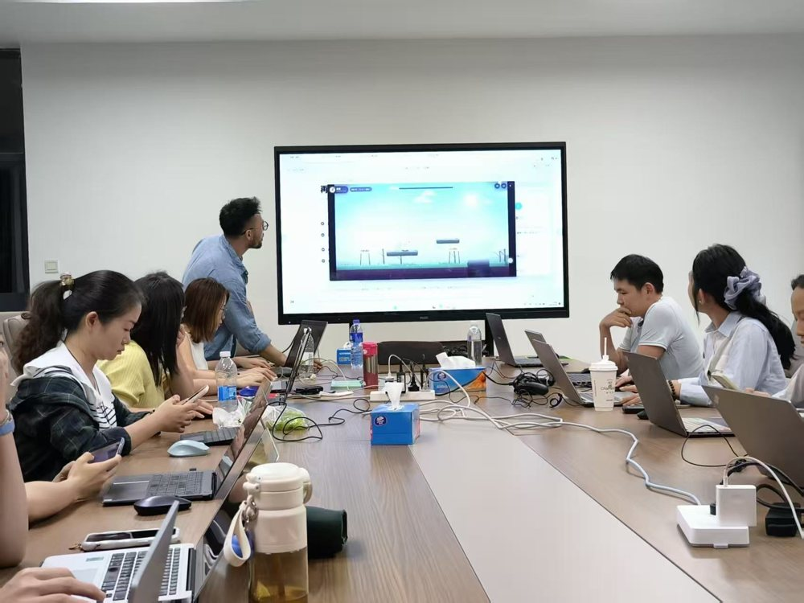
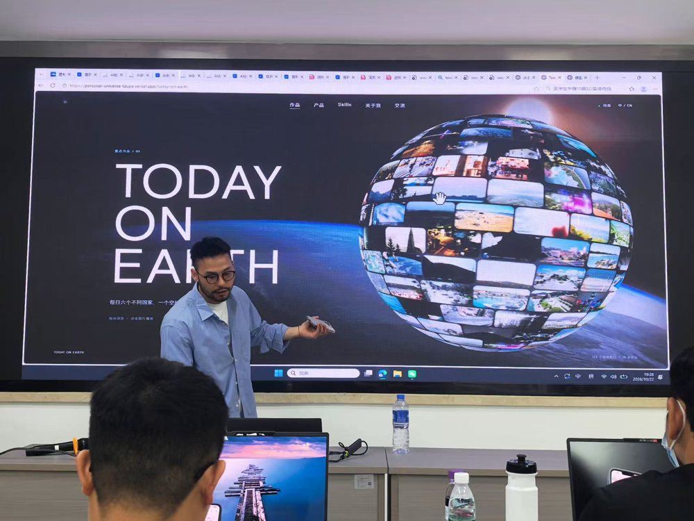
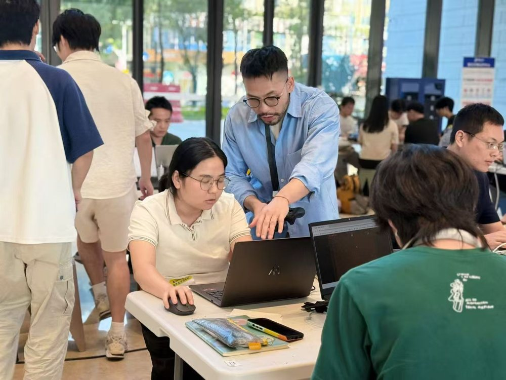

cellmotion.cn
cellmotion.cn carbounity.com
carbounity.com Glass Cover Flow
Glass Cover Flow▶ 全屏播放
第一名 × 2黑客松 · Agent 赛道
CardBot：给外贸团队的 AI 客户开发系统。找客户、查历史、写邮件、人工审批，一条线串起来。
一个人 + AI，从想法到产品，再到硅基领导力
 黎健堂主讲
黎健堂主讲我不是算法工程师。
我是一个用 AI 把东西做出来、交给付钱的人的人。
hely.fun 入库的 AI 设计案例
hely.fun + CellMotion 两个产品的提交
GitHub 公开仓库，产品、组件、工具
开源项目收到的 GitHub 星标
也在讲课碳基社区 AI Agent 第一课 · DeepSeek 家长实操课 · AI 通识与实操 5 讲 · 珠江职业技术学院讲座 | github.com/opc8838-hub
这些年一直在和老板、商家打交道。写代码，是 2026 年才开始的事。

东莞 → 广州总部
一线业务 → 主管 → 城市经理
天天跑商家，全是 ToB



做连锁品牌、开店、管店
海报、门头、菜单自己盯
继续服务本地商家
帮老板在抖音上做生意
掌相 ZXAI → hely.fun
CellMotion · B2W 工作室
阿里 20 周年年会，整座体育场坐满了阿里人。
我在现场，看着马云卸任董事局主席，把接力棒交给张勇；蔡崇信在台上讲起阿里最早的那段创业。
让天下没有
难做的生意
那天我记住一件事：
一家公司，可以被一句话带着走 20 年。






一个餐饮老板缺什么？
所以 hely 第一批想服务的，
就是餐饮老板。
你可以是一名
设计师
也可以，同时是好几种人。
我自己：不是科班，也不是程序员出身。这一年，用 AI 当过——





不是我多厉害两年前，这些事要一个设计团队、一个开发团队、一个视频团队；现在是一个人，加一群 AI。